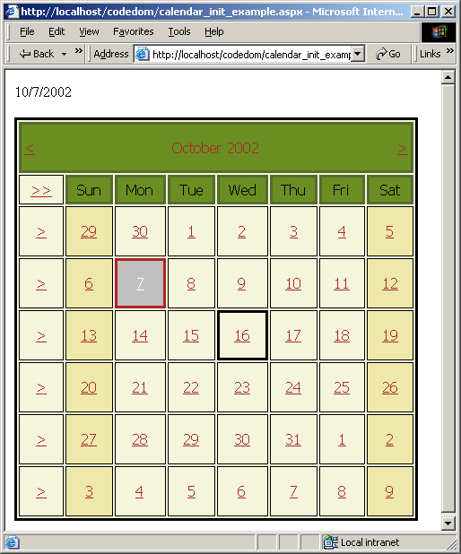
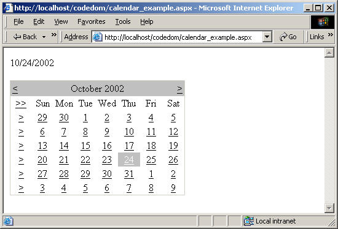

This example shows you how to use the ASP control Calendar. It displays the date selected in the calendar.
<%@ Page Language="Eiffel" Description="Eiffel ASP.NET example" %> <scri
These examples show you how to configure the different parameters of a calendar control. To do so you have to solutions.
The first solution consists to initialize the parameters of calendar at the same time it is declared.
<%@ Page Language="Eiffel" Description="Eiffel ASP.NET example" %> <script runat=server> feature -- Basic Operation selected_date_changed (source: SYSTEM_OBJECT; e: EVENT_ARGS) is -- Method calles when date selected change. do response.write_string (cal.selected_dates.item (cal.selected_dates.count - 1).to_short_date_string) end </script> <html> <body> <form runat=server> <asp:Calendar id=cal runat=server SelectionMode=DayWeekMonth OnSelectionChanged=selected_date_changed BackColor="Beige" ForeColor="Brown" BorderWidth="3" BorderStyle="Solid" BorderColor="Black" Height="450" Width="450" Font-Size="12pt" Font-Name="Tahoma,Arial" Font-Underline="false" CellSpacing=2 CellPadding=2 ShowGridLines=true TitleStyle-BorderColor="darkolivegreen" TitleStyle-BorderWidth="3" TitleStyle-BackColor="olivedrab" TitleStyle-Height="50px" DayHeaderStyle-BorderColor="darkolivegreen" DayHeaderStyle-BorderWidth="3" DayHeaderStyle-BackColor="olivedrab" DayHeaderStyle-ForeColor="black" DayHeaderStyle-Height="20px" DayStyle-Width="50px" DayStyle-Height="50px" TodayDayStyle-BorderWidth="3" WeekEndDayStyle-BackColor="palegoldenrod" WeekEndDayStyle-Width="50px" WeekEndDayStyle-Height="50px" SelectedDayStyle-BorderColor="firebrick" SelectedDayStyle-BorderWidth="3" OtherMonthDayStyle-Width="50px" OtherMonthDayStyle-Height="50px" /> </form> </body> <html>
The second solution consists to initialize the parameters of calendar in a feature, on_load feature for instance.
<%@ Page Language="Eiffel" Description="Eiffel ASP.NET example" %> <script runat=server> redefine on_load end </script> <script runat=server> feature -- Redefinition on_load (e: EVENT_ARGS) is -- redefinition of on_load feature do Precursor {WEB_PAGE} (e) cal.set_back_color (feature {DRAWING_COLOR}.beige) cal.set_fore_color (feature {DRAWING_COLOR}.brown) cal.set_border_width (feature {WEB_UNIT}.parse_string_culture_info (("3px").to_cil, feature {CULTURE_INFO}.invariant_culture)) cal.set_border_style (feature {WEB_BORDER_STYLE}.solid) cal.set_border_color (feature {DRAWING_COLOR}.black) cal.set_height (feature {WEB_UNIT}.parse_string_culture_info (("450px").to_cil, feature {CULTURE_INFO}.invariant_culture)) cal.set_width (feature {WEB_UNIT}.parse_string_culture_info (("450px").to_cil, feature {CULTURE_INFO}.invariant_culture)) cal.font.set_size (feature {WEB_FONT_UNIT}.parse_string_culture_info (("12pt").to_cil, feature {CULTURE_INFO}.invariant_culture)) cal.font.set_name (("Tahoma,Arial").to_cil) cal.font.set_underline (False) cal.set_cell_spacing (2) cal.set_cell_padding (2) cal.set_show_grid_lines (True) cal.title_style.set_border_color (feature {DRAWING_COLOR}.dark_olive_green) cal.title_style.set_border_width (feature {WEB_UNIT}.parse_string_culture_info (("3px").to_cil, feature {CULTURE_INFO}.invariant_culture)) cal.title_style.set_back_color (feature {DRAWING_COLOR}.olive_drab) cal.title_style.set_height (feature {WEB_UNIT}.parse_string_culture_info (("50px").to_cil, feature {CULTURE_INFO}.invariant_culture)) cal.day_header_style.set_border_color (feature {DRAWING_COLOR}.dark_olive_green) cal.day_header_style.set_border_width (feature {WEB_UNIT}.parse_string_culture_info (("3px").to_cil, feature {CULTURE_INFO}.invariant_culture)) cal.day_header_style.set_back_color (feature {DRAWING_COLOR}.olive_drab) cal.day_header_style.set_fore_color (feature {DRAWING_COLOR}.black) cal.day_header_style.set_height (feature {WEB_UNIT}.parse_string_culture_info (("20px").to_cil, feature {CULTURE_INFO}.invariant_culture)) cal.day_style.set_width (feature {WEB_UNIT}.parse_string_culture_info (("50px").to_cil, feature {CULTURE_INFO}.invariant_culture)) cal.day_style.set_height (feature {WEB_UNIT}.parse_string_culture_info (("50px").to_cil, feature {CULTURE_INFO}.invariant_culture)) cal.today_day_style.set_border_width (feature {WEB_UNIT}.parse_string_culture_info (("3px").to_cil, feature {CULTURE_INFO}.invariant_culture)) cal.weekend_day_style.set_back_color (feature {DRAWING_COLOR}.pale_goldenrod) cal.weekend_day_style.set_width (feature {WEB_UNIT}.parse_string_culture_info (("50px").to_cil, feature {CULTURE_INFO}.invariant_culture)) cal.weekend_day_style.set_height (feature {WEB_UNIT}.parse_string_culture_info (("50px").to_cil, feature {CULTURE_INFO}.invariant_culture)) cal.selected_day_style.set_border_color (feature {DRAWING_COLOR}.firebrick) cal.selected_day_style.set_border_width (feature {WEB_UNIT}.parse_string_culture_info (("3px").to_cil, feature {CULTURE_INFO}.invariant_culture)) cal.other_month_day_style.set_width (feature {WEB_UNIT}.parse_string_culture_info (("50px").to_cil, feature {CULTURE_INFO}.invariant_culture)) cal.other_month_day_style.set_height (feature {WEB_UNIT}.parse_string_culture_info (("50px").to_cil, feature {CULTURE_INFO}.invariant_culture)) end feature -- Basic Operation selected_date_changed (source: SYSTEM_OBJECT; e: EVENT_ARGS) is -- Method calles when date selected change. do response.write_string (cal.selected_dates.item (cal.selected_dates.count - 1).to_short_date_string) end </script> <html> <body> <form runat=server> <asp:Calendar id=cal runat=server SelectionMode=DayWeekMonth OnSelectionChanged=selected_date_changed /> </form> </body> <html>
Both codes have the same result. However, the second solution is a lot more quicker at the execution.
Here is the output:

pt runat=server> feature -- Basic Operation selected_date_changed (source: SYSTEM_OBJECT; e: EVENT_ARGS) is -- Method calles when date selected change. do response.write_string (cal.selected_dates.item (cal.selected_dates.count - 1).to_short_date_string) end </script> <html> <body> <form runat=server> <asp:Calendar id=cal runat=server SelectionMode=DayWeekMonth OnSelectionChanged=selected_date_changed /> </form> </body> <html>
Here is the output:
